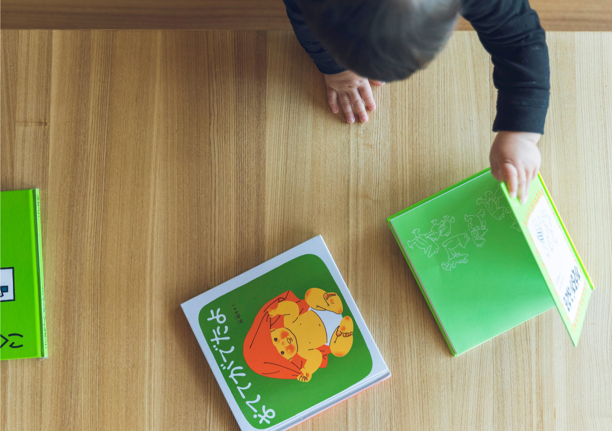
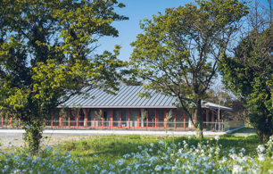
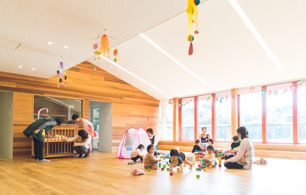
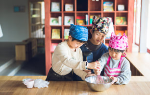

日々のお知らせやイベントはSNSでご案内します。
インスタグラム
フェイスブック
画像準備中
こどもの丘ナーサリー保育方針
絵本読み語り教育で
こどもたちの豊かなこころを育みます
0歳から絵本読み語り教育を行うことで、「豊かな想像力」、「豊かな感性」を育みます。
その想像力や感性はやがて興味を持つことにつながり、
そして、興味をもつことは「意欲を持つ好奇心」に変わります。
そして、絵本で覚えたたくさんの言葉で「伝える力」が自然と身に付き、
絵本の世界に入り込む力は「集中する力」に変わります。
-

園のこと
開園した3つの想い私たちは開園するにあたり「子ども達への想い」「はたらくご家庭への想い」「地域への想い」をもって 開園しました。私たちの3つの想いをご紹介します。
園のこと -
保育のこと
絵本の読み取りで心豊かに0歳から絵本読み語り教育で、1対1の個別の読み語りを行うことにより、声の温もり、肌のぬくもりを感じて、 心の豊かな人になってほしいと願っています。
保育のこと -

入園の案内
50年の保育実績「企業手動型保育園」とは、内閣府が所管する新しい形の保育園です。定型企業の方はもちろん、 地域の方も利用できます。
入園の案内 -
病児保育
病気の時も保育可能病気やけがで、保育園や小学校にいけない場合専用の保育室で看護師・保育士の下で保育を 受けられます。小学生も利用可能です。
病児保育 -

子育て支援イベント
地域の交流、個育て支援スペース子育て中の親子の皆さんを対象として教室や口座を開催したり、地域交流や子育て支援を目的としたるんるん cafeを併設しています。
子育て支援イベント -
ランチ
たっぷり野菜のじげもんランチ食にもこたわりをもち、園内で専任の調理スタッフが安心・安全な材料を使ってつくる給食は、乳幼児から 食の基盤を作っていきます。
じげもんランチ